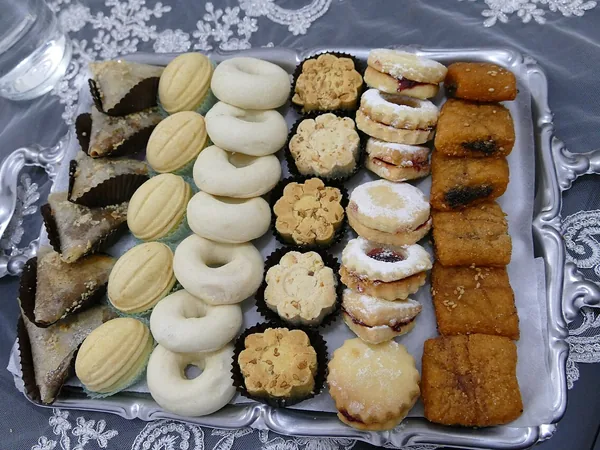

Salles des fêtesقاعات الأفراح49
Salles des fêtesقاعات الأفراح49
 Traiteursممونو الحفلات29
Traiteursممونو الحفلات29
Pâtisseriesمحلات المرطبات63
Aucun résultat. Essayez un autre mot ou un autre gouvernorat.لا توجد نتيجة. جرّب كلمة أو ولاية أخرى.
Par gouvernoratحسب الولاية
Arianaأريانة14Béjaباجة4Ben Arousبن عروس10Bizerteبنزرت15Gabèsقابس13Gafsaقفصة7Jendoubaجندوبة5Kairouanالقيروان10Kasserineالقصرين9Kébiliقبلي2Le Kefالكاف9Mahdiaالمهدية10La Manoubaمنوبة11Médenineمدنين13Monastirالمنستير16Nabeulنابل27Sfaxصفاقس16Sidi Bouzidسيدي بوزيد6Silianaسليانة4Sousseسوسة19Tataouineتطاوين10Tozeurتوزر3Tunisتونس28Zaghouanزغوان8
Vous êtes un professionnel ?هل أنت مهني؟
Soyez trouvé par les Tunisiens qui vous cherchent. Votre fiche existe peut-être déjà : ajoutez-la, vérifiez-la ou corrigez-la gratuitement.اجعل التونسيين الذين يبحثون عنك يجدونك. ربما بطاقتك موجودة: أضفها أو وثّقها أو صحّحها مجانًا.
Gratuit aussi sur nos sitesمجانًا أيضًا على مواقعنا
Se marier en Tunisie : les démarchesالزواج في تونس: الإجراءات →Papiers, étapes et délais, gratuitementالوثائق والمراحل والآجال، مجانًاVotre avisرأيك يهمّنا
Une remarque, une erreur, une idée ? Écrivez-nous : chaque message est lu.ملاحظة، خطأ، فكرة؟ اكتب لنا: كل رسالة تُقرأ.